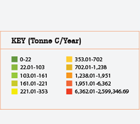
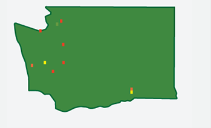
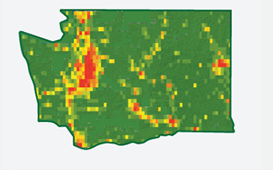
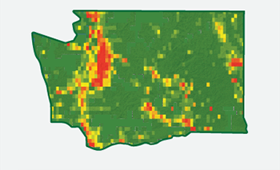
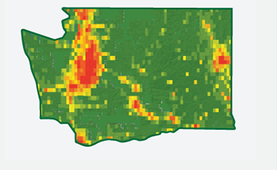
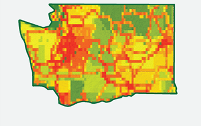
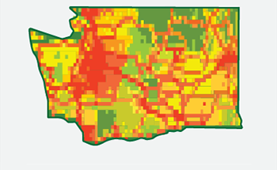

Fossil Fuel Emissions in Washington StateThe Vulcan fossil fuel CO2 emissions inventory is constructed by researchers at Arizona State University. Here we show maps of the emissions from various activities for Washington State. The maps show the fossil fuel emissions in metric tons of carbon per year for each 10 km x 10 km box in the state.
These figures show that the largest sources of emissions in Washington State are cars, trucks and other mobile CO2 sources. While a few individual power plants are large point sources of CO2 (see electricity production figure and note color scale), there are relatively few fossil fuel-powered electric generation plants in Washington so the net total source of CO2 for power generation in Washington State is relatively low compared to other states. Note also that most of the emissions are associated with population centers (i.e., cities) or the roads connecting those cities. (Data published in 2009.) |
 | ||||||
Emissions from electric generating plants |
Emissions from businesses |
Emissions from factories and other large industries |
|||||
|  |  |  | |||||
Emissions from homes |
Emissions from on-road (such as cars) and |
Total emissions in tons of carbon per year |
|||||
|  |  |  | |||||
|
Gurney, K.R., D. Mendoza, Y. Zhou, B. Seib, M Fischer, S. de la Rue du Can, S. Geethakumar, C. Miller (2009) The Vulcan Project: High resolution fossil fuel combustion CO2 emissions fluxes for the United States |
|||||||